<!DOCTYPE html>
<html>
  <head>
    <meta charset="utf-8">
    <meta name="viewport" content="width=device-width, initial-scale=1.0">
    <meta property="og:type" content="article">
    <meta property="og:title" content="Зарплатный калькулятор getmatch • Артём Самсонов • Продуктовый дизайнер">
    <meta property="og:description" content="Как я проектировал зарплатный калькулятор getmatch">
    <meta property="og:image" content="http://artemsamsonov.com/img/default.jpg">
    <link href="https://fonts.googleapis.com/icon?family=Material+Icons" rel="stylesheet">
    <link rel="stylesheet"><!-- Yandex.Metrika counter --> <script type="text/javascript" > (function(m,e,t,r,i,k,a){m[i]=m[i]||function(){(m[i].a=m[i].a||[]).push(arguments)}; m[i].l=1*new Date();k=e.createElement(t),a=e.getElementsByTagName(t)[0],k.async=1,k.src=r,a.parentNode.insertBefore(k,a)}) (window, document, "script", "https://mc.yandex.ru/metrika/tag.js", "ym"); ym(88097279, "init", { clickmap:true, trackLinks:true, accurateTrackBounce:true, webvisor:true }); </script> <noscript><div></div></noscript> <!-- /Yandex.Metrika counter -->
    <title>Зарплатный калькулятор getmatch • Артём Самсонов • Продуктовый дизайнер</title>
  <link href="./css/style.bundle.css" rel="stylesheet"></head>
</html>
<body class="body_light">
  <header class="header header_light">
    <div class="header__logo"><a href="index.html">Артём Самсонов</a></div>
  </header>
  <div class="content">
    <div class="article">
      <section>
        <h1>Зарплатный калькулятор getmatch</h1>
        <p class="article__annotation">На серии глубинных интервью Кандидаты отметили «анализ зарплат» как одну из  ключевых потребностей. Компании же регулярно просили у Sales-команды зарплатную аналитику, основанную на реальных данных. Опираясь на эти запросы, мы сформировали две JTBD. Для Кандидата: понимать, достаточно ли денег он получает в текущей компании. Для Компании: определять размер зарплаты специалисту с учётом его уровня и локации.</p>
        <h2>Решение</h2>
        <p> Спроектировали новый раздел «Зарплаты», в котором по умолчанию показываем Кандидатам график зарплат по выбранной специальности. Если Кандидат хочет посмотреть статистику по уровням, городам или форматам, а также увидеть рейтинг компаний, которые платят больше всего — придётся анонимно оставить зарплату. Сразу показываем товар лицом, закрыв значения заглушками:</p>
        <p class="article__image"><a href="../img/getmatch-calc-01.jpg" target="_blank">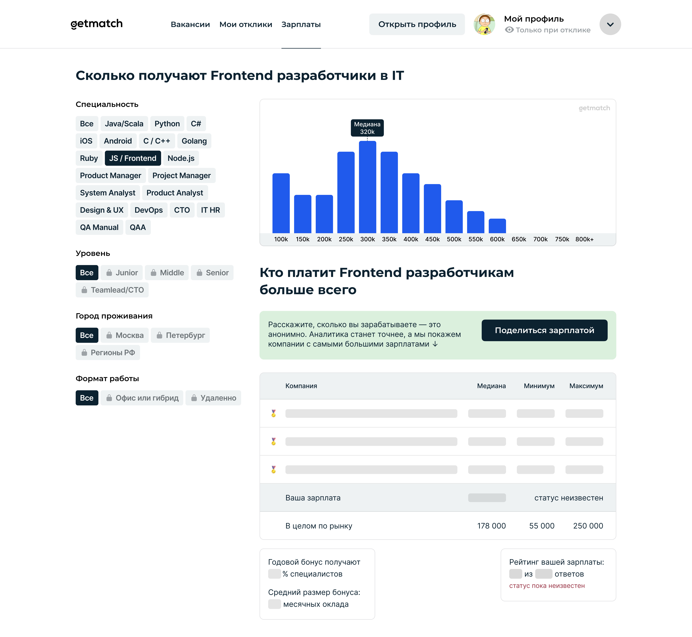</a></p>
        <p>В форме добавления зарплаты объясняем, зачем нам понадобились те или иные данные:</p>
        <p class="article__image"><a href="../img/getmatch-calc-02.jpg" target="_blank">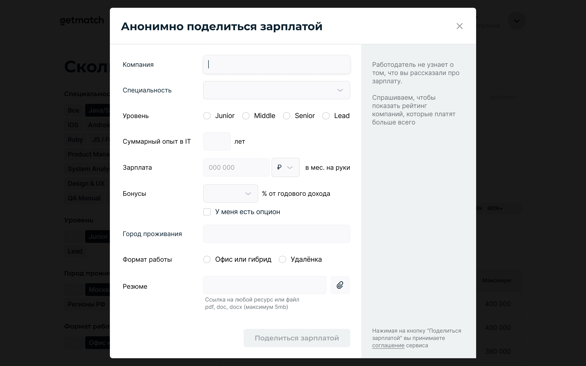</a><span class="article__image-caption">Например, при выборе компании</span></p>
        <p class="article__image"><a href="../img/getmatch-calc-02b.jpg" target="_blank">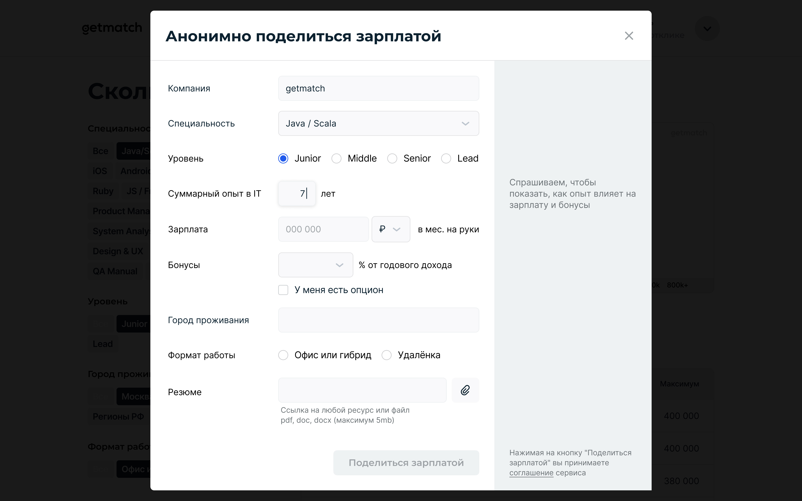</a><span class="article__image-caption">Или при указании опыта</span></p>
        <p>Валидируем все необходимые ошибки ввода:</p>
        <p class="article__image"><a href="../img/getmatch-calc-03.jpg" target="_blank">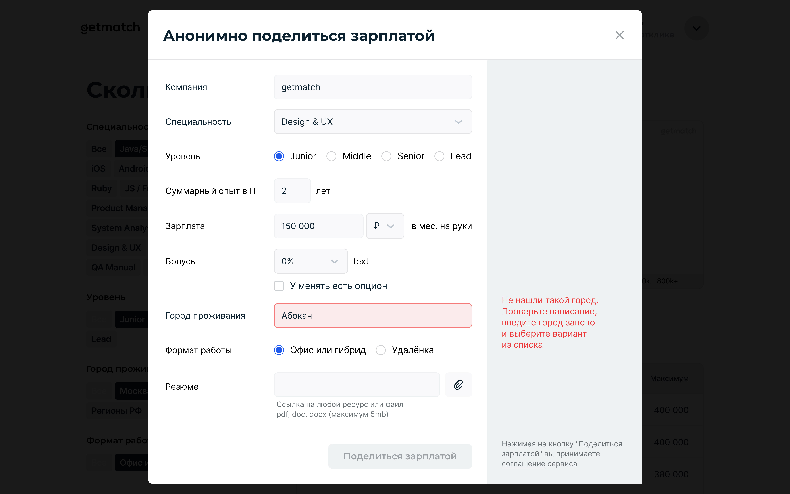</a></p>
        <p>А также подсказываем пользователю по наведению на кнопку, какие поля нужно обязательно заполнить:</p>
        <p class="article__image"><a href="../img/getmatch-calc-04.jpg" target="_blank">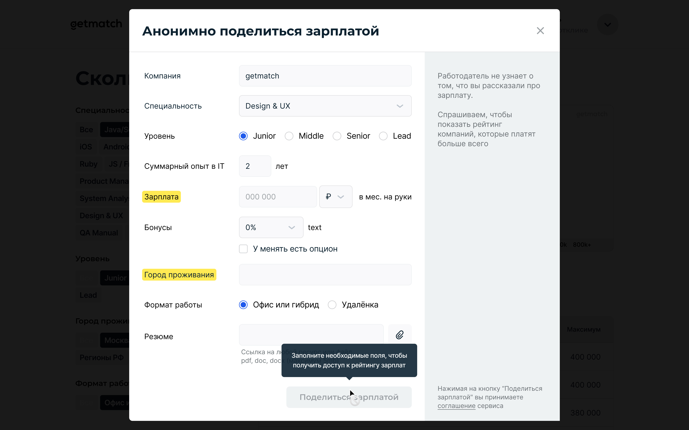</a><span class="article__image-caption">Придётся всё же указать зарплату и город проживания…</span></p>
        <p>Добавление зарплаты не только разблокирует фильтры, но и позволяет посмотреть своё положение на рынке:</p>
        <p class="article__image"><a href="../img/getmatch-calc-05.jpg" target="_blank">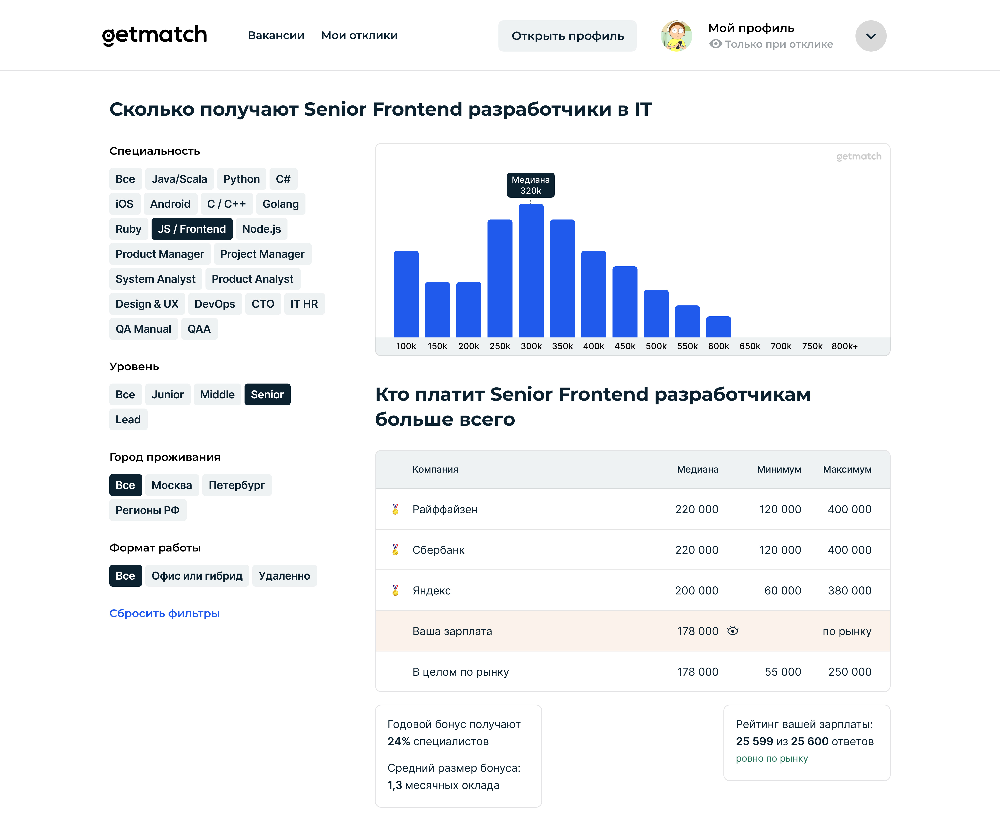</a></p>
        <p>У зарплат выше, по рынку или ниже есть цветовые индикаторы:</p>
        <p class="article__image"><a href="../img/getmatch-calc-06.jpg" target="_blank">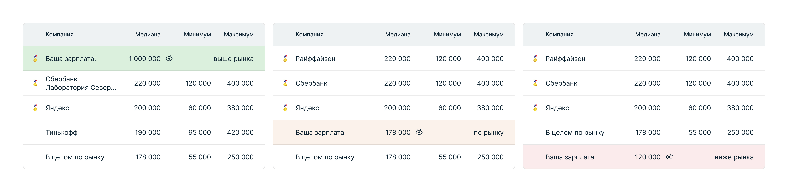</a></p>
        <p>Зарплату можно скрыть от чужих глаз, чтобы показать данные друзьям или не переживать о взгляде из-за плеча в офисе:</p>
        <p class="article__image"><a href="../img/getmatch-calc-07.jpg" target="_blank">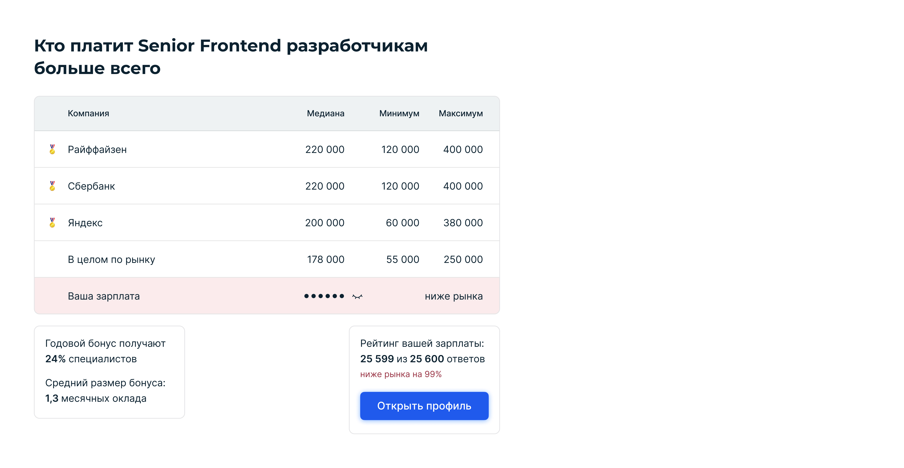</a></p>
        <p>Если зарплат не хватает, покажем заглушку и позже пришлём оповещение в телеграм-бот:</p>
        <p class="article__image"><a href="../img/getmatch-calc-08.jpg" target="_blank">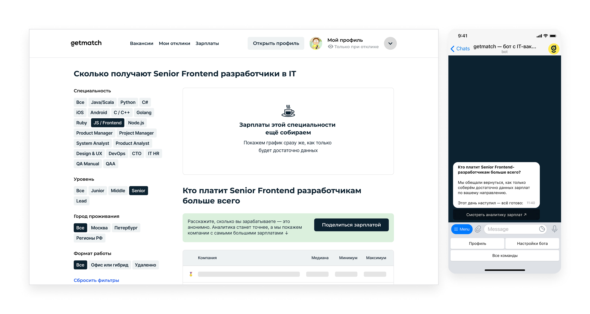</a></p>
        <p>У всех страниц, компонентов и состояний есть адаптивные версии:</p>
        <p class="article__image"><a href="../img/getmatch-calc-10.jpg" target="_blank">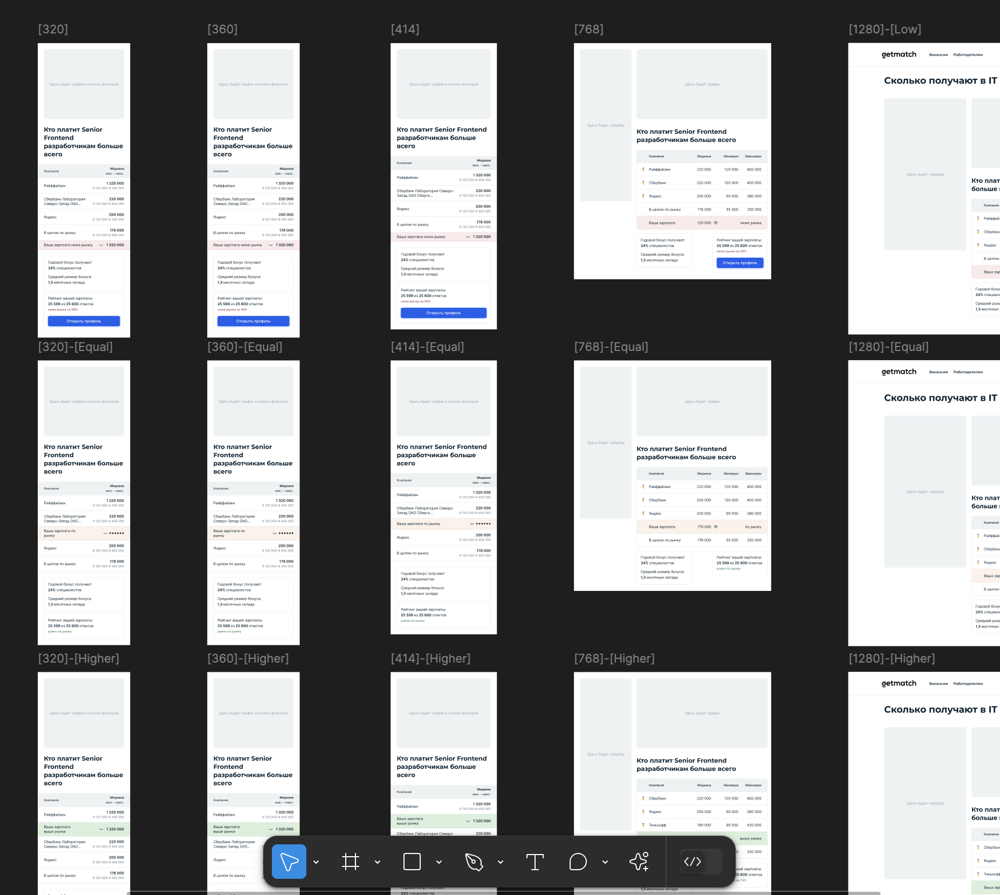</a></p>
        <p>В рамках задачи провели с UX-писателем серьёзную работу над формулировками. Я руководил процессом и ревьюил варианты:
          <p class="article__image"><a href="../img/getmatch-calc-11b.jpg" target="_blank">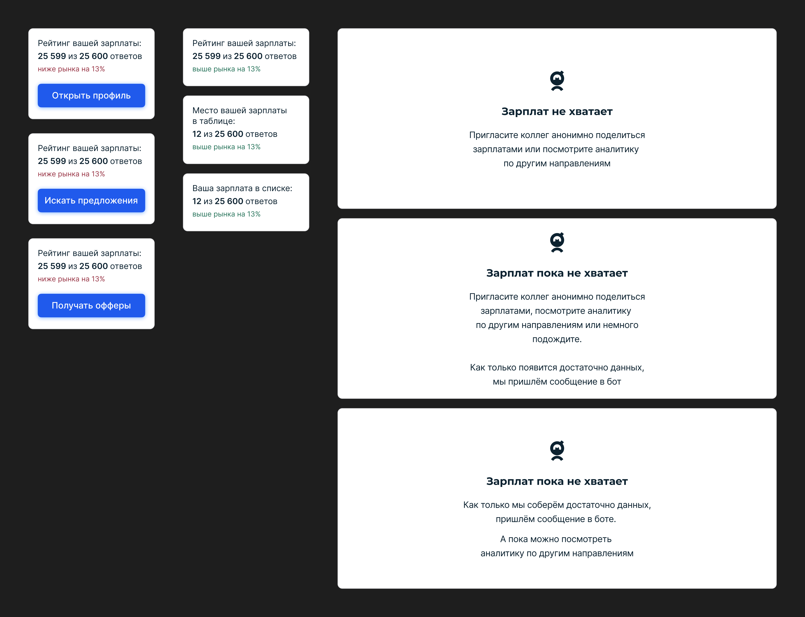</a><span class="article__image-caption">Несколько вариаций обсуждаемых формулировок</span></p>
          <p class="article__image"><a href="../img/getmatch-calc-11.jpg" target="_blank">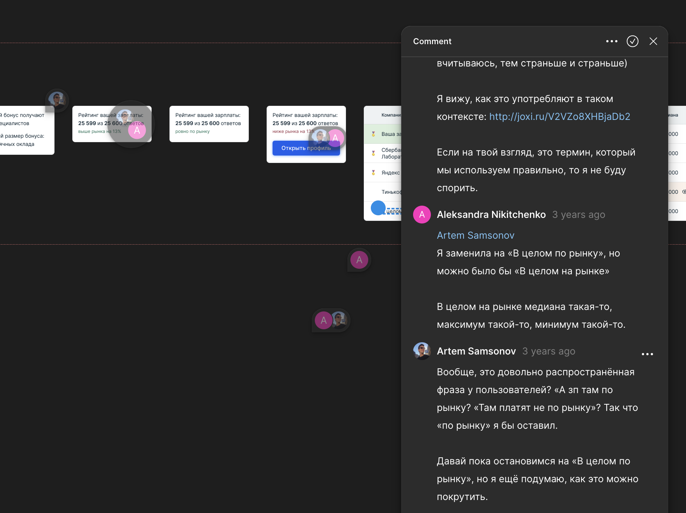</a><span class="article__image-caption">Пример обсуждения</span></p>
          <p>Разработчикам передали не только подробные макеты, но и текстовые спецификации с прототипами.</p>
          <p><a href="https://www.figma.com/proto/gRAEj3xOESxAVwgkzbZjJo/%E2%9C%85-Calc-%E2%86%92-Iteration-1?page-id=701%3A45383&amp;node-id=794-55069&amp;p=f&amp;viewport=455%2C342%2C0.16&amp;t=JKYRqaQhiauFifht-1&amp;scaling=min-zoom&amp;content-scaling=fixed&amp;starting-point-node-id=794%3A55069" target="_blanc">Пример кликабельного прототипа</a></p>
        </p>
        <h2>Результаты</h2>
        <p>С кандидатской стороны ориентировались прежде всего на две метрики: среднее количество оставленных зарплат в месяц и повышение MAU всего сервиса в целом. Обе метрики достигли ожидаемых значений.</p>
        <p>CTA «Открыть профиль» в случае «Ваша зарплата ниже рынка» подняла метрику открытия профилей для компаний. Однако, к увеличению наймов это не привело — чаще всего профили открывали маловостребованные специалисты уровня junior.</p>
        <p>В первом же квартале после релиза компании-клиенты купили анонимизированные аналитические отчёты на NDA миллионов рублей.</p>
      </section>
    </div>
  </div>
<script type="text/javascript" src="./js/bundle.js"></script></body>